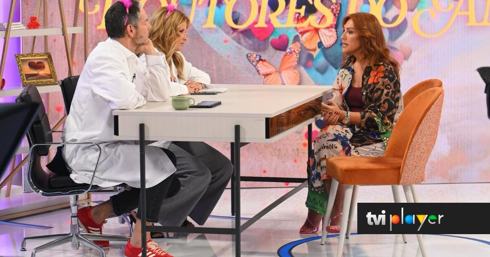
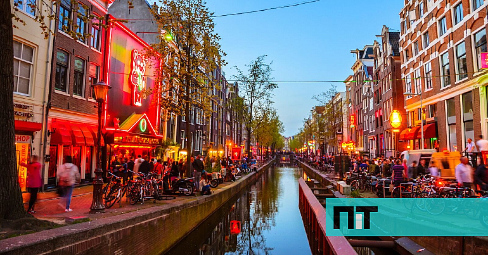
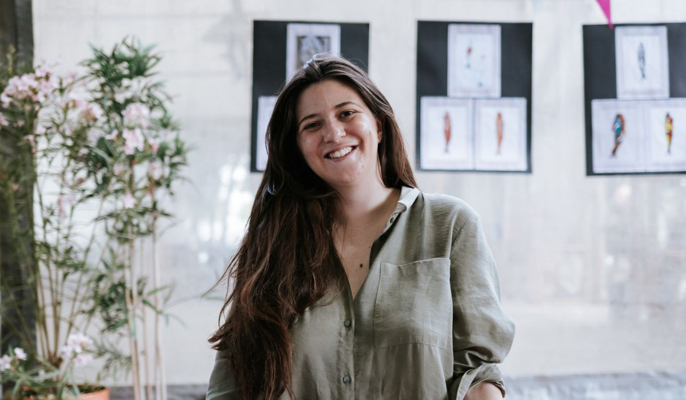
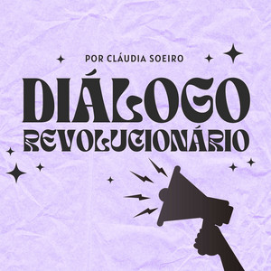
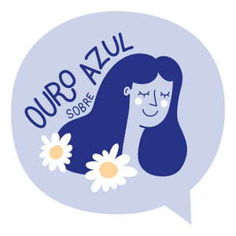
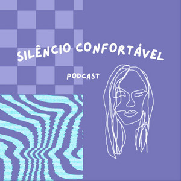
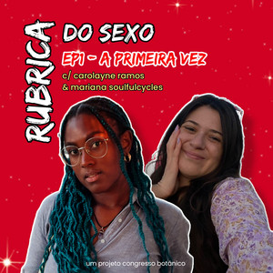

Podcast · Português
Sexo e Outras Coisas
O meu próprio podcast, onde reflito sobre educação sexual e outras coisas que me interessam, como os projetos internacionais.
Podcast e entrevistas
Podcast · Português
O meu próprio podcast, onde reflito sobre educação sexual e outras coisas que me interessam, como os projetos internacionais.
Imprensa e TV

Dois às 10 · TVI Entrevista na TV. A minha parte começa aos 25:30
NiT Esta educadora sexual portuguesa organiza viagens eróticas femininas pelo mundo
Revista Maria À procura de uma viagem erótica feminista Notícias ao Minuto Viagens eróticas feministas: "Não significa ter sexo, objetivo é educar"Convidada em podcasts

Diálogo Revolucionário #6 · Educar para a sexualidade com Mariana Fonseca
Ouro Sobre Azul Ep. 204 · Sexualidade e menstruação, com a Mariana
Silêncio Confortável Ep. 35 · O Benfica joga em casa, com Mariana Fonseca
Congresso Botânico Rubrica do Sexo, EP1 · A primeira vezContacto